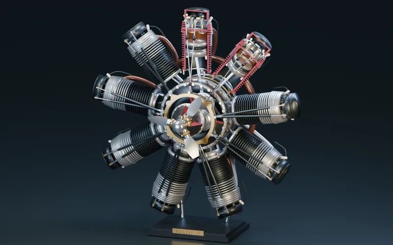
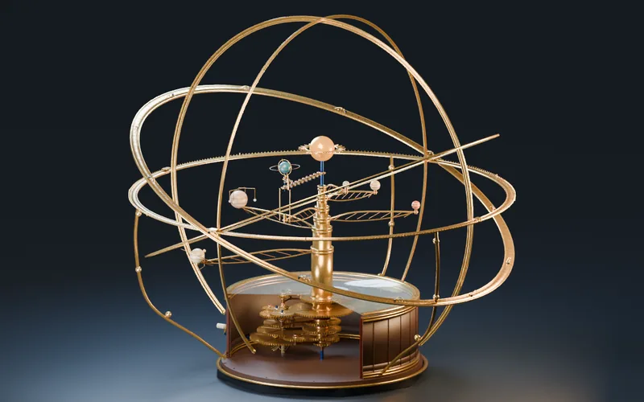
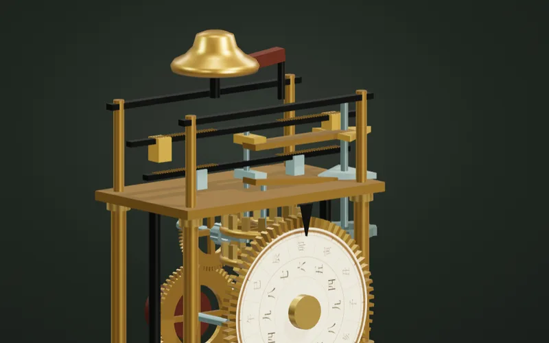
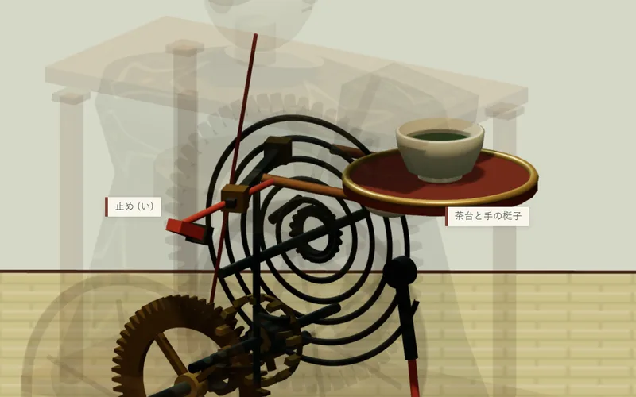
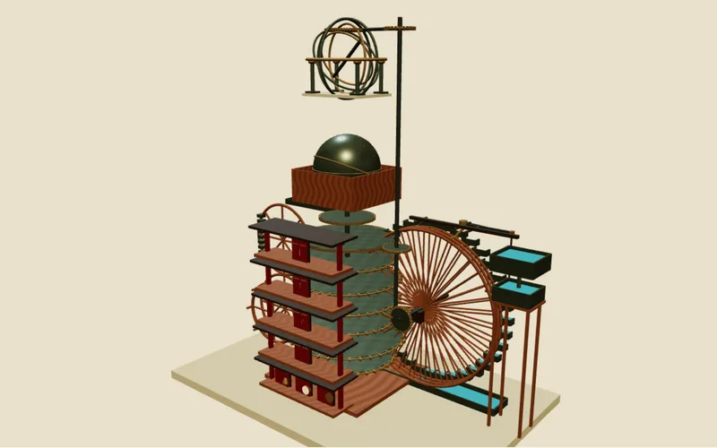

第1室
動く機械
中で何が起きているのかを 回す/切る/分解する の3つで見れる部屋です。
-

1-01
星型9気筒エンジンの断面
題材: 航空機用の星型エンジン（R-975／R-985 級の配置を参考）
9本のシリンダーが星の形に並んだエンジンです。点火の順番やピストンの動きを中から見れます。
-

-

1-03
バベッジの階差機関 No.2
題材: 1846〜49年に設計された計算機（計算部の実機は1991年に完成）
クランクを回すと数字の輪が足し算をして、表が1行ずつできていきます（輪は全部で248個）。
-

-

-
